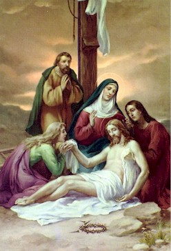

Hmun Hleithumnak
ⅫⅠ

P : Christu Bawipa, nangmah cu kan lo biak ih kan lo lawm asi
M : Zianghrangah tile na thianghlim thinglamtah in leitlun minung hmuahhmuah cu na tlen zo asi.
P : Miseenpi tla cu Calvary tlang ihsin an tlung thluh thlang asi. Nu Maria thin hnem dingah dungthluntu John le Jerusalem nunau thianghlim pawl lawng an tang thlang asi. Arimatia khua mi Nicodemus in thinglamtah parih Bawipa'i ruak cu a lak ih Nu Maria ih ṭang sungah a pom ter asi.
Thla kan cam pei :
Lungsia thinhar ih um mi Nu Maria, na tuar mi riahsiatnak ih sin a ra suak mi ṭhathnemnak cu misual pawl kanmah khal in co ter ve hram aw. Kan thinlung ṭhatlonak pawl zoh lo in dungthluntu John bangin na fate ah in can ter hram aw. Na Fapa Jesuh in kan thlacamnak in cosang hram dingah Nu Maria kanmah hrangah thla in cam sak aw.
Vancung ih a um kan Pa...
Ave Maria...
Pa, Fapa, Thiang Thlarau hnen ah...
P : Bawipa kanmah in zaangfah aw.
M : Kanmah in zaangfah aw.
P : A thi zo mi ih thlarau tla cu Pathian zaangfahnak in nunnuamnak sungah rak cawl tlang thlang seh law.
M : Amen.
13.Na Fa tuar mi zonzaih ruat in, Kan nun sung hmuah ṭap ve dingah, Ka thin i run pem ter aw.